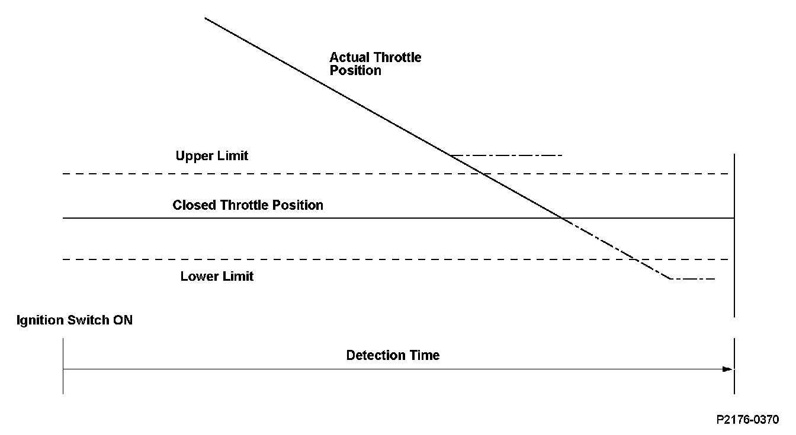
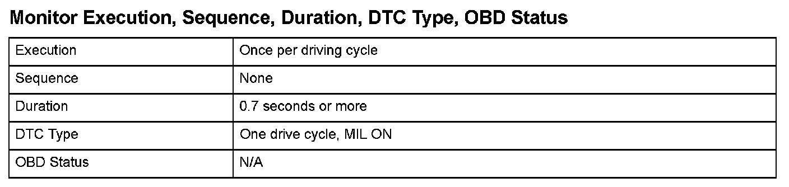
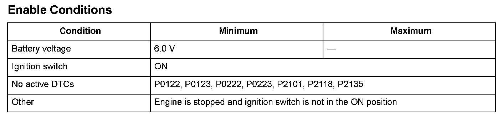

Advanced Diagnostics
DTC P2176: Throttle Actuator Control System Idle Position Not Learned
General Description
The electronic throttle control system (ETCS) controls the throttle valve opening. The system is composed of the throttle actuator, the throttle valve, throttle position (TP) sensors A and B, the throttle actuator control module, the throttle actuator control module relay, the accelerator pedal position (APP) sensor, and the powertrain control module (PCM).
The APP sensor is operated via the throttle cable to determine the accelerator opening value when the driver presses the accelerator pedal. The accelerator pedal opening value is converted to a signal in the APP sensor and transmitted to the PCM to compute the target position. The target position signal is then transmitted to the throttle actuator control module. The throttle actuator control module determines the throttle valve target position according to the signal received and operates the throttle actuator to move the throttle valve to the target position. The actual throttle valve position is determined by TP sensor A installed in the throttle body.
The throttle actuator control module transmits a signal to the throttle actuator and moves the throttle valve to the fully closed position to register the throttle valve fully closed position after the ignition switch is turned ON.
The throttle actuator control module detects the malfunction of the throttle actuator control system, and it transmits a malfunction signal to the PCM when the registration of the throttle valve fully closed position is not completed within a predetermined time or the registered value is out of predetermined range after the ignition switch is turned ON. When the PCM receives the malfunction data from the throttle actuator control module, the PCM detects a malfunction in the throttle actuator control system and stores a DTC.

Monitor Execution, Sequence, Duration, DTC Type, OBD Status

Enable Conditions
Malfunction Threshold
One of these condition must be met for at least 0.7 seconds.
- The registration of the throttle valve fully closed position is not completed within a predetermined time after the ignition switch is turned ON.
- The registered value of the throttle valve fully closed position is 0.74 V*1, 1.61 V*2 or more, or 0.49 V*1, 1.37 V*2 or less.
*1: TP sensor A
*2: TP sensor B
Diagnosis Details
Conditions for illuminating the MIL
When a malfunction is detected, the MIL comes on and the DTC and the freeze frame data are stored in the PCM memory.
Conditions for clearing the MIL
The MIL will be cleared if the malfunction does not recur during three consecutive trips in which the diagnostic runs.
The MIL, the DTC, and the freeze frame data can be cleared by using the scan tool Clear command or by disconnecting the battery.